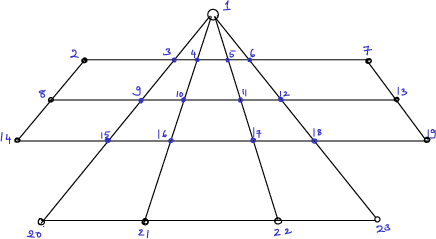

In my x96 projects, students learn to teach a computer to play a board game. My students have developed a code to play the game (you can get it off github here). In the implementations, a lot of routine manipulations about piece movements are via natural matrices and matrix multiplications. Here is one example.
The board looks like this:

Pieces can move from any vertex to an adjacent vertex (adjacent means that the two vertices are connected by a line, or edge in graph theoretic notation). There are other kinds of moves, but let us focus on this for this problem. Can you write a code, thinking in terms of matrices, to input
As a hint, first draw up what is called the adjacency matrix \(A\) for the board. There are 23 positions, so \(A\) is a \(23\times 23\) matrix with ones and zeros as entries. Associate each position on the board with a number from 0 through 22. The position \((i,j)\) in the matrix is 1 if there is an edge between vertex \(i\) and vertex \(j\) on the board, 0 else.
Now think of the input list of vertices to be a length-23 vector \(\bf x\) with a 1 in all the vertices in the input list, and 0 everywhere else.
Show that \(A^m {\bf x}\) has non-zero values in exactly the list of vertices that are accessible from the input list in exactly \(m\) moves.
You do not have to submit this portion. There are many possible perspectives to understand matrices. Graphs are one, and indeed, we understand both matrices and graphs better together. Even if you do not submit this, try to figure out how to do this.